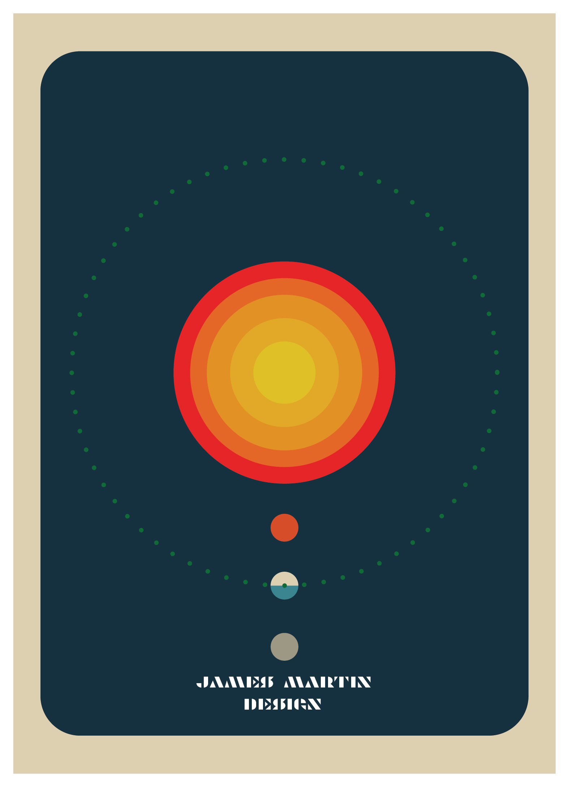
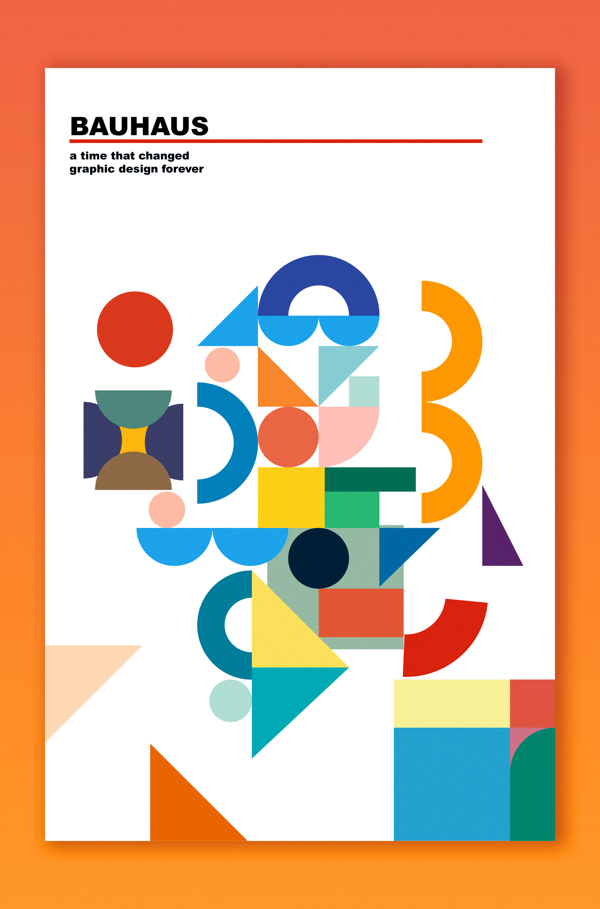
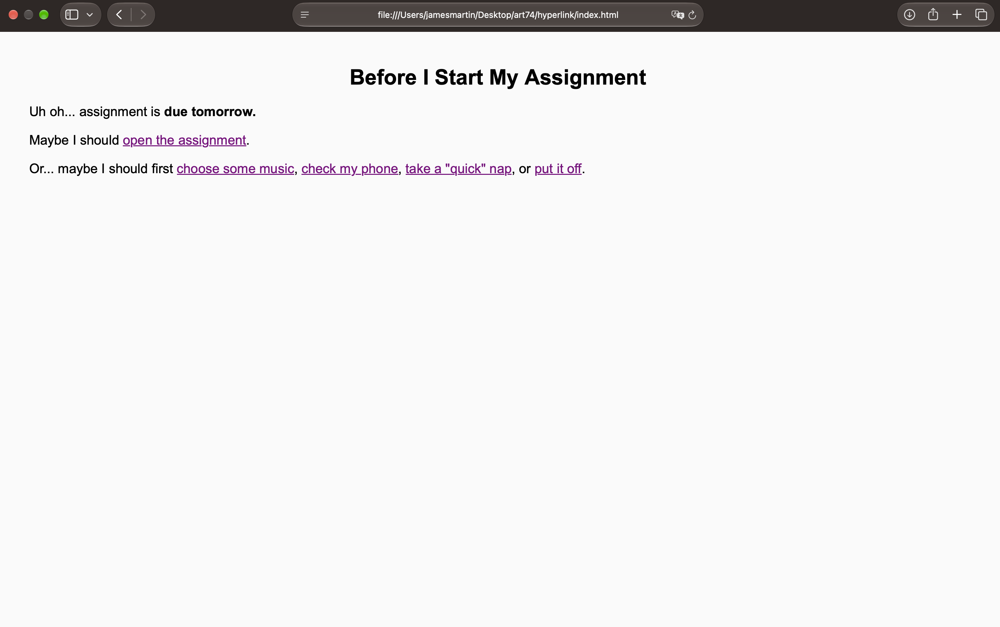
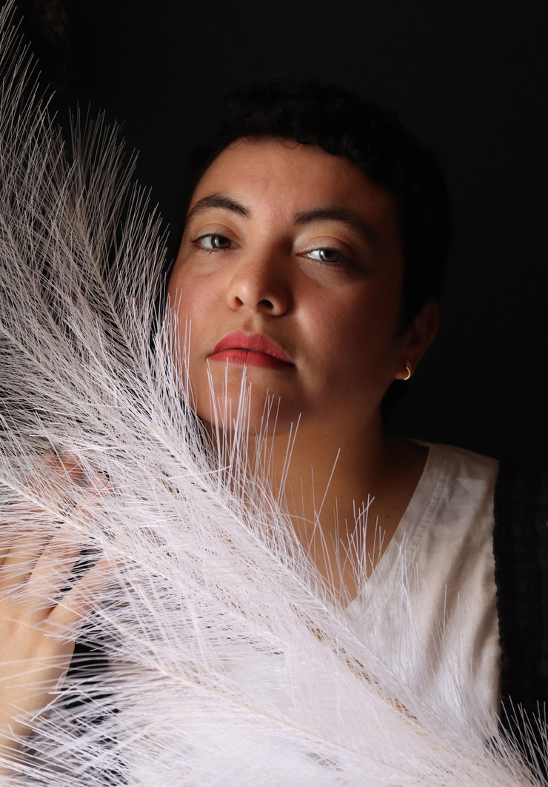
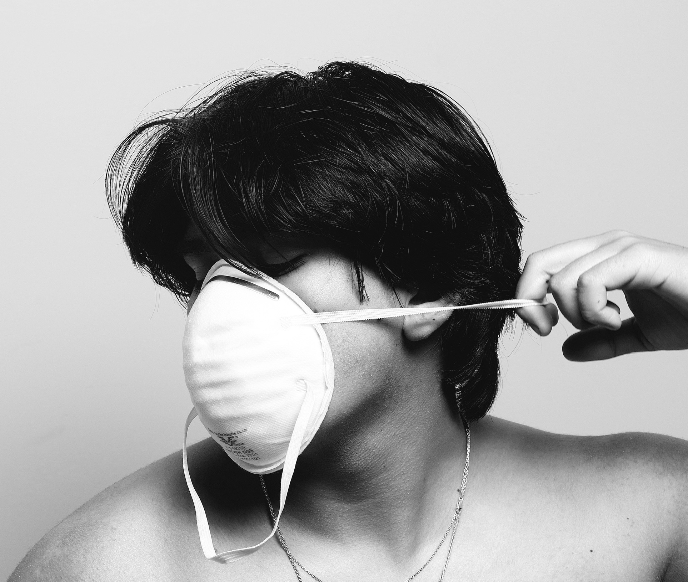

In Art 74, I explore digital media through glitch art, image and video remixing, web design, and interactive coding. Using tools like Photoshop, Illustrator, HTML, and CSS, I create work that examines how technology and internet culture shape meaning and experience.
Mashup Mixed Media Art
Meme Mashup
Glitch Art

Hypertext Project
I enjoy exploring typography, color, and composition to create graphics that communicate ideas and express my style. I learned the foundations of graphic design at Cuesta College and use the Adobe Creative Suite to bring my ideas to life.


Photography is where my creative journey began, sparking my passion for visual storytelling. I enjoy capturing personality and emotion through portraits and exploring how light, color, and composition can turn everyday moments into something expressive.





